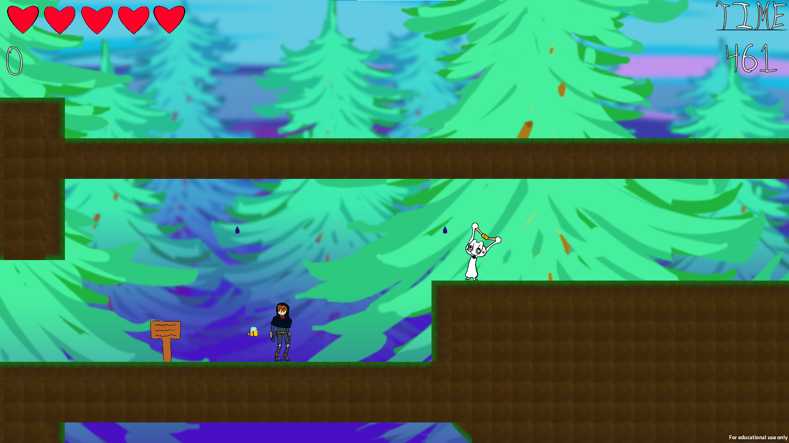

Salutations! Below lies some of my projects which I have either designed,
produced, and/or programmed! Please take a look!

I am passionate about game design, programming,
and embracing creativity. I keep a positive attitude to overcome any
obstacles. My greatest strengths lie in my adaptability and critical
thinking skills, as well as my cooperation skills. I have extensive experience in:
- Game Production: I have served as a producer on various game projects for 4 years.
- AI Programming: I enjoy working with AI and have been able to program AI for the past 3 years of my game development journey.
- Gameplay Programming: I have worked on programming a wide variety of gameplay systems, ranging from platformer movesets to unit command systems.
- Tools Programming: I love designing tools for my fellow programmers and designers. I have created a worked thoroughly with building my own tools within custom engines and Unity alike.
G.W. Carver Center (2019-2020)

A action platformer where you take control of an abandoned video game character.
The player can utilize an offensive dash, dive kick, and dagger throw to manuever
through puzzles and combat enemies while heading to the end of the level. I served
as producer on this project after the original producer stepped down half way through.
I worked with the team to cut unreachable content to allow the game to reach its required
deadline.
I also worked on:
- Player controller: Implemented the physics for Fetch's dash, dive kick, and dagger throw.
- Level Design: I created the tutorial and first level, as well as the boss stage.
- Enemy AI Programmer: Programmed the AI of the final boss of the game.
DigiPen Institute of Technology (2020)

Control a wizard as you navigate randomly generated dungeons to face tough enemies to reach the boss.
Along the way, upgrade your stats and your spells to aid yourself in the fight against endless waves.
For this project, I worked on:
- Leveling System: I designed the formulas for leveling up the player.
- Gameplay Programming: I implemented the game's spell system and leveling system.
DigiPen Institute of Technology (2021)

Mankind has landed on an alien planet and need your help in colonizing it!
Order around the colonists to work at various buildings to further humanity's
expansion or die trying! For this project, I worked on:
- UI Programmer: I wrote the basic UI systems for the game, including the alert message system.
- Command Design: I wrote and designed the command system for the colonists to enter, leave, and operate buildings.
- AI Programmer: I wrote the behaviors for enemy and colonist AI, from both wandering and targeting.
DigiPen Institute of Technology (2021-2022)

Control robotic cleaning assistant Cooper
as he enters a new home.
Clean up the "treasure" and make the place spotless. For this project, I served as the producer
for the team. I worked with artists, game designers, and audio designers and helped coordinate the team
to complete the game in time for release. I also worked on:
- Tools Programming: Implemented an internal editor for designers to use for easier implementation of content.
- Engine Architecture: Implemented a message and serialzation system for reading components into the engine. Also assisted
in implementing the game's behavior system.